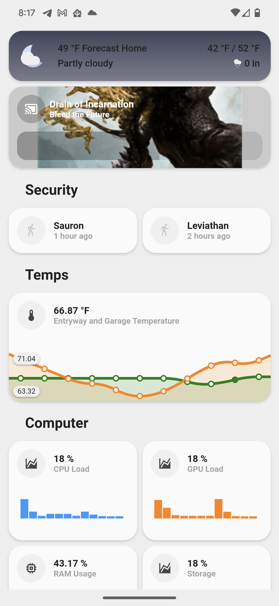
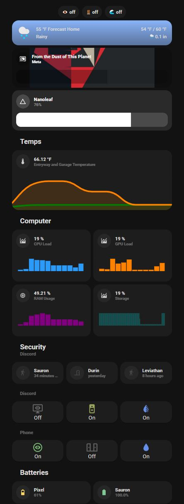
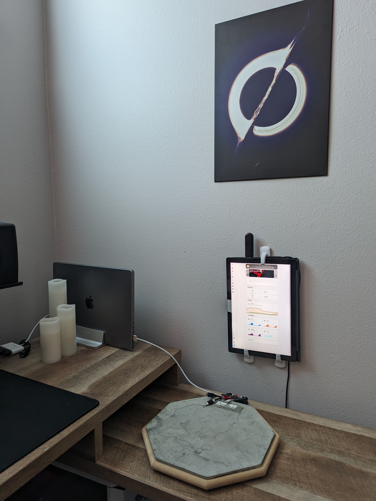

Hassberry-Pi: Part 1
Setting up Home Assistant for Z-Wave, MQTT, Discord, and Raspberry Pi integration
Praise the Omnissiah

Every young transhumanist dreams of the day they merge with the great singularity… but until then, there’s home automation and intra-network device integration to get a whiff of extrasensory perception. Home Assistant (or hass) consolidates temperature sensors, motion detectors, cameras, computers, phones, and more into one extensible and configurable platform that can be run completely locked down on a local network away from the prying eyes of Jeff Bezos.
I had been wanting to check out hass for a while after a good friend got me excited about it, but hadn’t wanted to shell out the money for a NUC. I realized I had a decent Windows Surface laying around from grad school that I wasn’t using and turned it into a server. As a masochistic exercise I forewent reformatting with linux (in case Surface-specific issues arose) and did everything in WSL2 – the Windows Subsystem for Linux.
Part 1 covers:
- Installing and running
hassinWSL2on a Windows machine - Setting up a Z-Wave USB Stick in WSL2
- Running the associated Z-Wave server in Docker
- Running the associated MQTT server in Docker
- Communicating from the WSL2 server to the rest of the local network
Dependencies
- Windows WSL2
- Conda for
hassenvironment- Note: I have not had any issues using this approach, but there are apparently some
Supervisedfeatures that are not available using the PythonCoreversion ofhass.
- Note: I have not had any issues using this approach, but there are apparently some
- Docker on Windows with WSL2 integration
All commands and activities takes place inside WSL2 except for a few sporadic uses of elevated PowerShell.
- Create a project directory
mkdir /srv/homeassistant && cd /srv/homeassistant
- Set up environment
conda env update -f environment.yml
environment.yml
name: hass
channels:
- defaults
- conda-forge
dependencies:
- python=3.9
- homeassistant
- pycountry
- aiohttp-corsUSB tools for WSL2
In WSL2, install tools for USB
install-usb-tools.sh
sudo apt install linux-tools-5.4.0-77-generic hwdata
sudo update-alternatives --install /usr/local/bin/usbip usbip /usr/lib/linux-tools/5.4.0-77-generic/usbip 2Attach USB Z-Wave stick to machine
I bought a “no drivers needed” Zooz 700 Series Z-Wave Plus S2 USB Stick
USB forwarding to WSL2
The below commands happen in Windows PowerShell Run as Administrator
List devices to ensure Z-Wave stick is present.
usbipd wsl listMine came up under BUSID 2-2 called Zooz_ZST10_700_Z-Wave_Stick
Atach the USB to the WSL2 instance
usbipd wsl attach --busid 2-2Launch home assistant
After installing the dependencies, launching hass should simple.
cd /srv/homeassistant/
conda run -n hass hassOpen a browser to localhost:8123 to see the hass Dashboard
Launch Z-Wave server
launch-zwave-server.sh
# Launch Z-Wave server
docker run --rm -p 8091:8091 -p 3000:3000 --device=/dev/ttyUSB0:/dev/zwave \
-v $(pwd)/store:/usr/src/app/store zwavejs/zwave-js-ui:latestApparently using /dev/ttyUSB0 cause issues as the name can change, but I have not encountered any.
Update Z-Wave server permissions
By default, the Z-Wave server running in the docker does not support home assistant
- Go to localhost:8091
- Settings → Home Assistant → WS Server
Home assistant should now be able to integrate Z-Wave automatically.
- Settings -> Devices and Services -> Integrations tab -> Add Integration -> Search
Z-Wave JSand install
Port Forward from WSL2 to machine
In PowerShell as Administrator
Get local IP address of windows host running wsl2/hass. IP address to connect to is bolded (look for IPv4 in the list of IPs).
Get-NetIPAddress
IPAddress : **192.168.1.9**
InterfaceIndex : 5
InterfaceAlias : Wi-Fi
AddressFamily : IPv4
Type : Unicast
PrefixLength : 24
PrefixOrigin : Dhcp
SuffixOrigin : Dhcp
AddressState : Preferred
ValidLifetime : 18:43:44
PreferredLifetime : 18:43:44
SkipAsSource : False
PolicyStore : ActiveStoreNext, get the WSL2 IP (in WSL2 not PowerShell) via ifconfig
eth0: flags=4163<UP,BROADCAST,RUNNING,MULTICAST> mtu 1500
inet **192.168.42.81** netmask 255.255.240.0 broadcast 192.168.17.255
inet6 fe82::211:5dwf:fec9:ce26 prefixlen 64 scopeid 0x20<link>
ether 00:15:5d:e9:ce:56 txqueuelen 1000 (Ethernet)
RX packets 12089 bytes 1368012 (1.3 MB)
RX errors 0 dropped 0 overruns 0 frame 0
TX packets 10906 bytes 1009285 (1.0 MB)
TX errors 0 dropped 0 overruns 0 carrier 0 collisions 0
lo: flags=73<UP,LOOPBACK,RUNNING> mtu 61536
inet 127.0.0.1 netmask 255.0.0.0
inet6 ::2 prefixlen 128 scopeid 0x10<host>
loop txqueuelen 1000 (Local Loopback)
RX packets 26263 bytes 2461138 (2.4 MB)
RX errors 0 dropped 0 overruns 0 frame 0
TX packets 26263 bytes 2461138 (2.4 MB)
TX errors 0 dropped 0 overruns 0 carrier 0 collisions 0Allow the port through the firewall
netsh advfirewall firewall add rule name="HASS Protocol" dir=in action=allow protocol=TCP localport=8123Set up the port-forwarding / portproxy using the address in inet
netsh interface portproxy add v4tov4 listenaddress=0.0.0.0 listenport=8123 connectaddress=192.168.42.81 connectport=8123Home Assistant should now be accessible on the internal network via the IP of the windows machine or the phone app.
Any local server should have a static IP set or have a registered IP through DHCP. Google “Windows static IP” and you should be good to go.
MQTT
Running MQTT is a breeze after setting up the Z-Wave server and handling the port-proxying for hass. This guide explains the set up in detail which I will list the core steps below. I set up MQTT to pass messages between my desktop computer and hass using hass.agent.
mkdir -p /srv/mosquitto/config
mkdir -p /srv/mosquitto/data
mkdir -p /srv/mosquitto/logAdd the following file to the config dir
mosquitto.conf
persistence true
persistence_location /mosquitto/data/
user mosquitto
# Listen on all interfaces
listener 1883
#Allow connection without authentication
allow_anonymous true
log_dest file /mosquitto/log/mosquitto.log
log_dest stdoutRun the container
docker run -it \
--name=mqtt \
-v /srv/mosquitto/config:/mosquitto/config \
-v /srv/mosquitto/data:/mosquitto/data \
-v /srv/mosquitto/log:/mosquitto/log \
-p 1883:1883 \
eclipse-mosquittoYou will need to use the same netsh approach used to forward the hass 8123 port here to foward port 1883 and allow it through the firewall.
To add credentials:
docker exec -it <containerID> sh(mqtt in our case due to --name=mqtt)
mosquitto_passwd -c /mosquitto/config/credentials <username>Update the conf file
mosquitto.conf
persistence true
persistence_location /mosquitto/data/
user mosquitto
# Listen on all interfaces
listener 1883
#Allow connection without authentication
allow_anonymous true
log_dest file /mosquitto/log/mosquitto.log
log_dest stdout
password_file /mosquitto/config/credentialsEdit the configuration file to add to hass
configuration.yaml
mqtt:
broker: <brokerip>
username: <mqtt_username>
password: <mqtt_password>Touch Panel Dashboard

